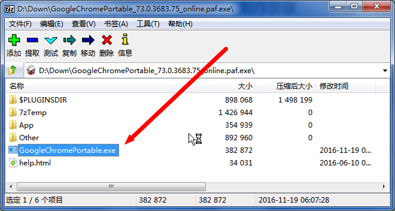
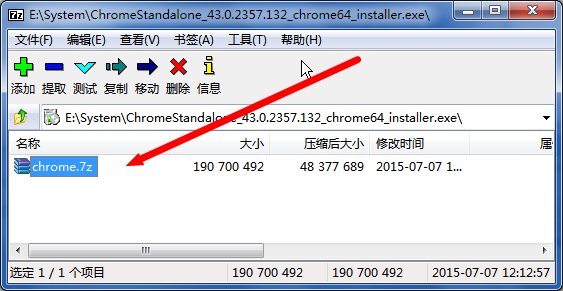
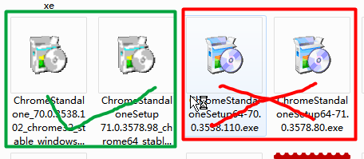
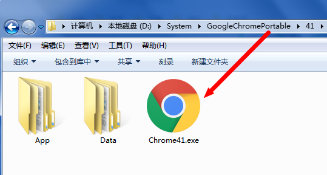

由于某些原因需要切换 Chrome 的版本做些测试性的工作，如果重新下载旧版本安装的话，本机的新版本就被会覆盖。 这不是我想要的，上古时代做些 IE 兼容性的工作的时候往往会下载一个 IETester，可以切换各个版本的 IE，而且和本机的 IE 互相不冲突。所以去 google 了一下，有没有类似的 Chrome 多版本共存的软件，找了一圈不怎么理想，然后找到一篇关于自己动手制作多版本 Chrome 共存的文章。 自己尝试了下，觉得很不错，留存记录下
本文只针对 Windows 下的 Chrome 浏览器的使用。
特点
- 安全绿色免安装，可直接拷贝到 U 盘等随声携带，不用担心被植入一些其他东西。
- 支持任意版本，可随意选择。
- 和现有日常使用的 Chrome 共存，不会有冲突。
原理
利用GoogleChromePortable.exe启动器来启动 Chrome 主程序，所有 Chrome 用户数据都指向本程序所在的Data目录，从而实现和系统安装的 Chrome 隔离。
制作步骤
目录建立
可以现在任意地方新建一个目录，用于存放多版本 chrome，例如我们可以新建一个chromes目录
下载并提取启动器
下载地址：https://portableapps.com/apps/internet/google_chrome_portableopen in new window
下载下来是个 exe 文件，不要直接双击打开，如果你电脑上的压缩软件支持右键以压缩包的形式打开的可以直接以压缩包的形式打开，
如果不支持的话可以将文件后缀改成zip打开，提取里面的GoogleChromePortable.exe，放到上面新建的chromes目录。

如果上面的下载地址打不开或者速度过慢的话，可以用我已经提取的，下载地址：https://www.lanzous.com/i7mnqfiopen in new window
提取 Chrome 主程序
这里我们可以下载所需要的任意版本的 Chrome，注意下载的必须是离线版本的，不是在线安装的。
离线版本下载地址：https://github.com/ABBCHN/Chrome---/blob/master/chrome_offline_download.md
找到自己想要的 Chrome 版本，下载完成后也是一个exe安装包，同上提取启动器，不要直接双击打开安装，修改下扩展名，改为zip后打开。
打开后里面就一个chrome.7z的压缩文件，将其提取出来。

制作便携版
- 在上面新建的
chromes目录中新建一个版本号的目录76，为了方便区分（我们上面下载的 Chrome 版本就是 76）。 - 复制
GoogleChromePortable.exe到这个文件夹，可以改名成自己想要的名称，比如Chrome76.exe。 - 新建
App目录，将上面提取的 Chrome 主程序chrome.7z复制进来，右键chrome.7z选择解压到当前文件夹（解压出来后就是Chrome-bin，解压完成后可以删除chrome.7z或留着备用）
最终形成以下的目录形式即可


然后双击Chrome76.exe即可运行，首次运行会在当前目录生成一个Data目录，用于存放 Chrome 的数据，这样就不会和系统的安装的 Chrome 有冲突了。
参考文章：点击查看